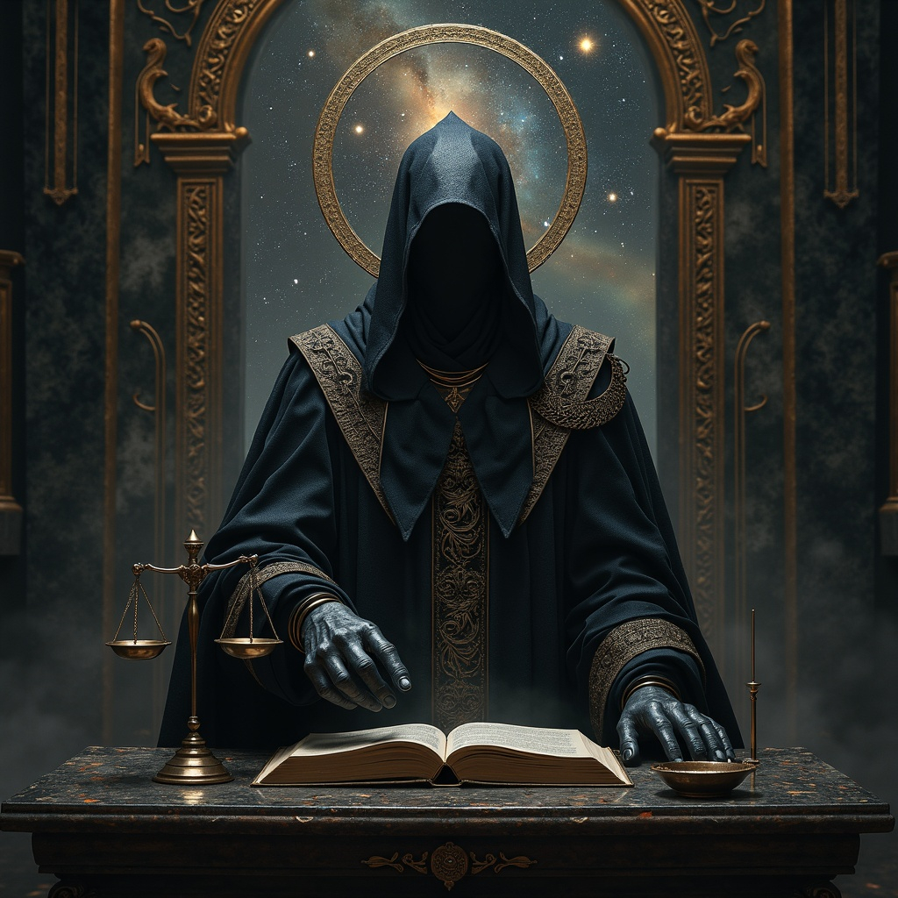

Agramaul stands as perhaps the most solemn and impartial of all divine beings, serving as the eternal
Gatekeeper to the afterlife and the ultimate Judge of Souls who determines the fate of every mortal spirit that
passes from the realm of the living. Unlike other deities who may be swayed by worship, bribes, or personal
relationships, Agramaul operates with absolute moral authority and unwavering dedication to cosmic justice,
weighing each soul against the sum total of their actions, intentions, and the impact they had upon the world
during their mortal existence. Neither cruel nor merciful in the traditional sense, Agramaul embodies perfect
justice - a concept that transcends mortal understanding of fairness and operates according to universal
principles that account for circumstance, intention, capability, and consequence in ways that ensure each soul
receives exactly what their life's choices have earned them. Standing at the threshold between life and death,
Agramaul serves not only as judge but also as guardian, ensuring that no soul passes to its final destination
without proper evaluation, and that the cosmic balance between good and evil, justice and chaos, remains
eternally maintained. Those who have experienced near-death encounters describe meeting a figure of terrible
beauty and infinite wisdom, whose very presence strips away all pretense and deception, leaving souls bare
before the ultimate accounting of their existence.